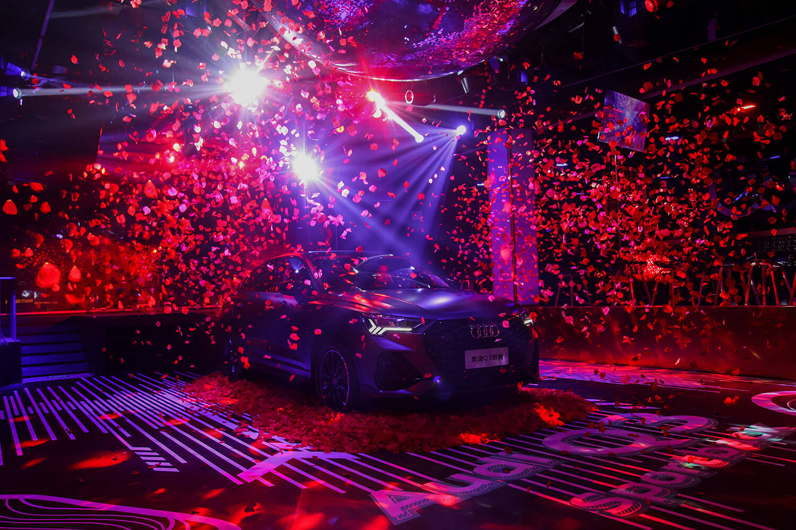
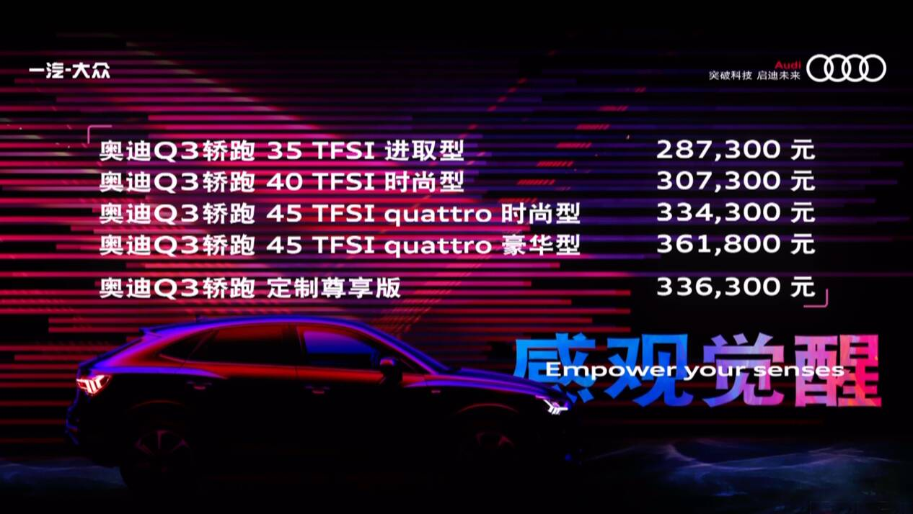
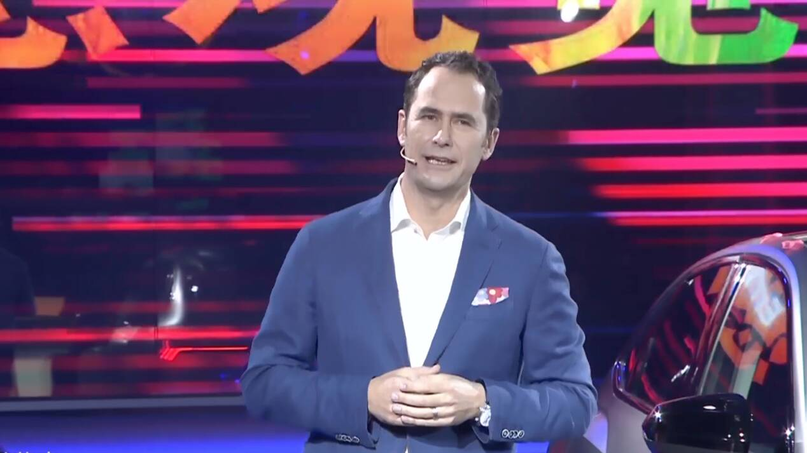
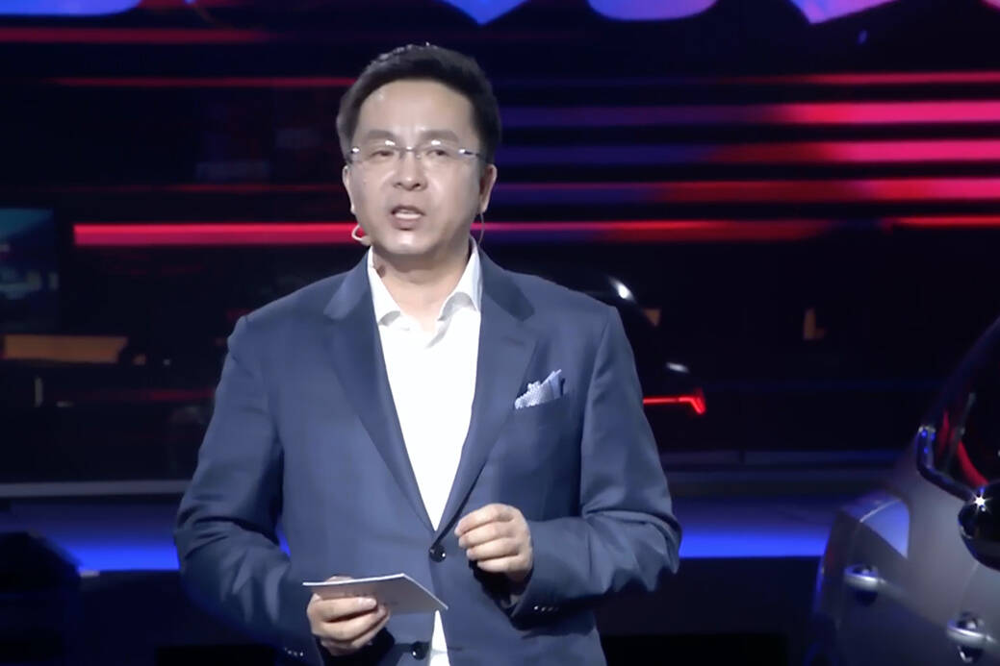
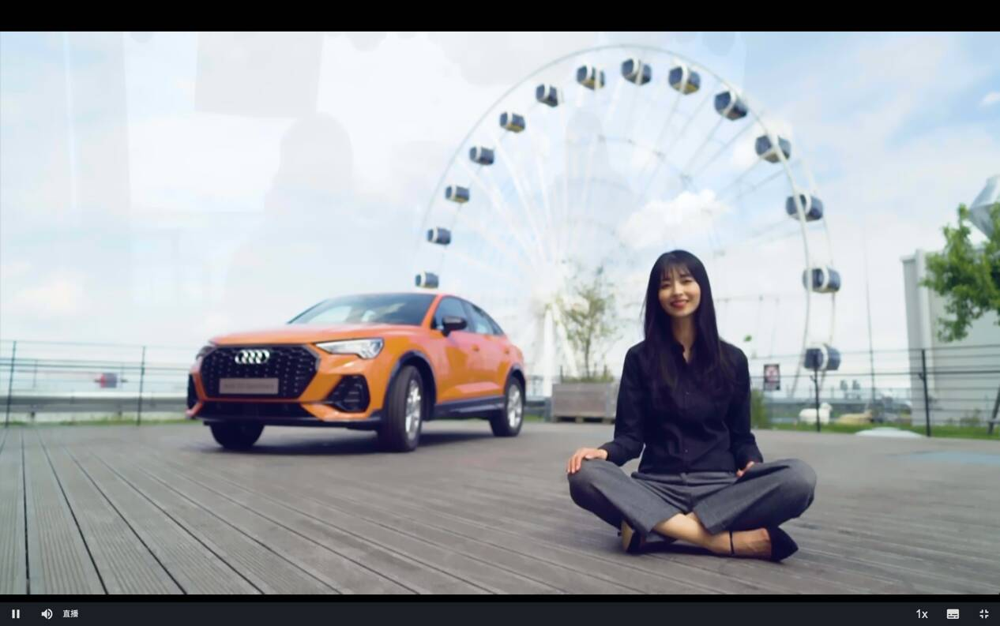
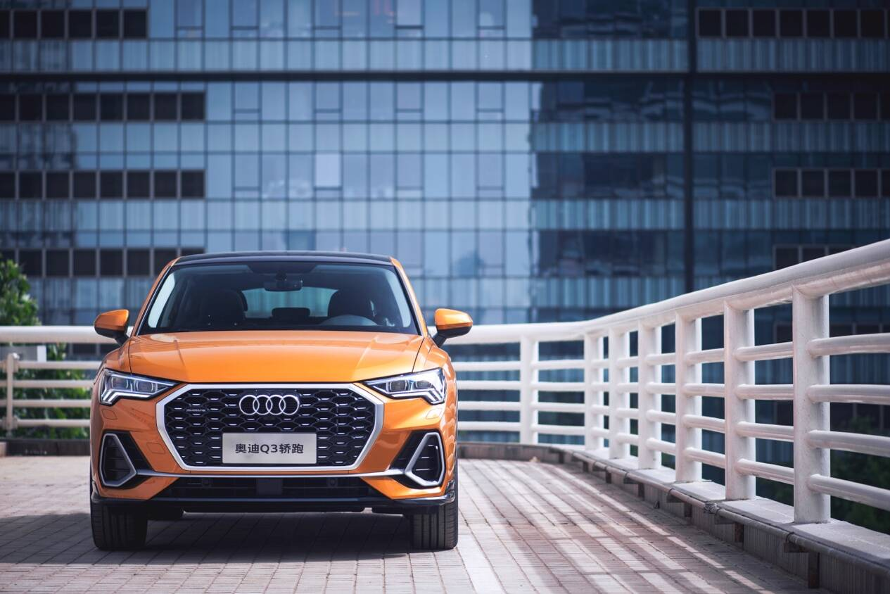
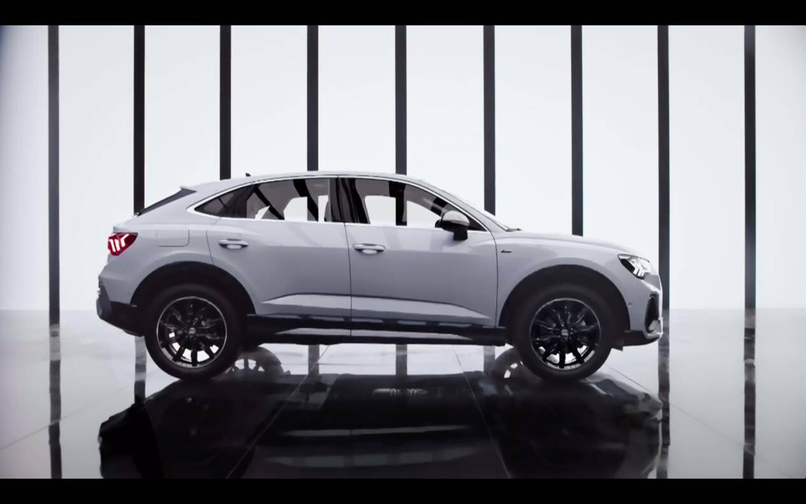
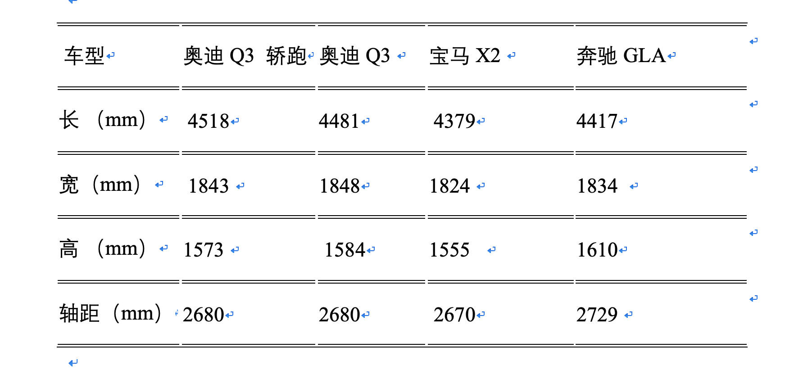
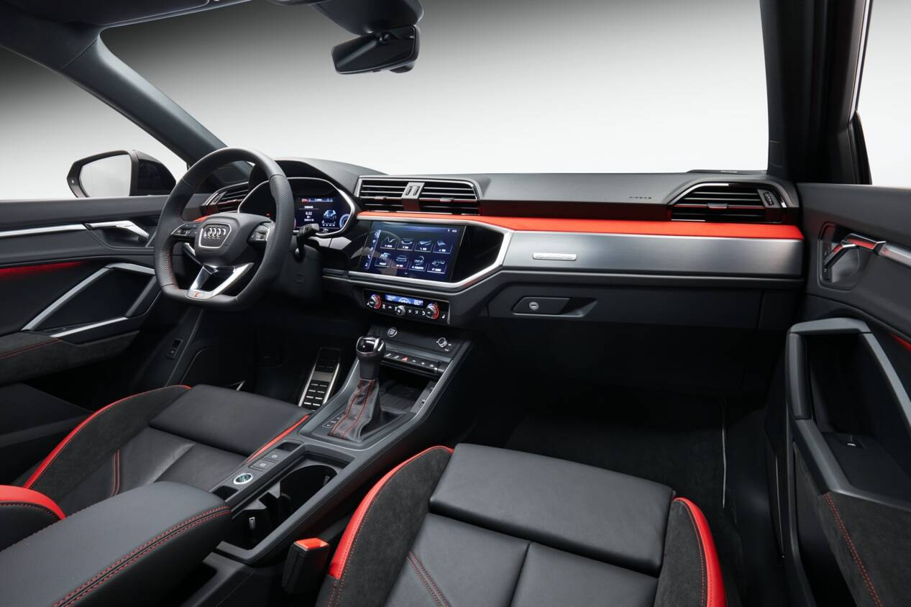
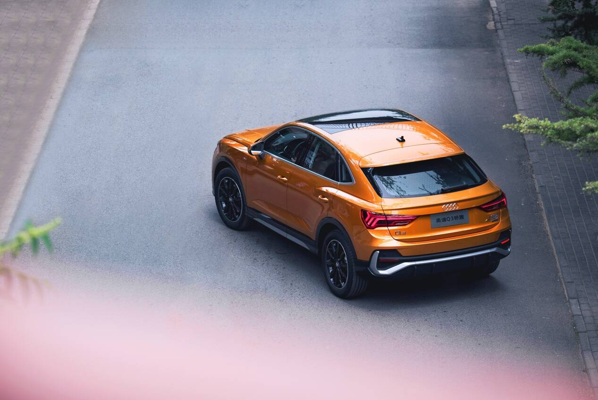

5月29日，一汽-大众奥迪Q3轿跑在上海、深圳、杭州、成都四地同步上市，市场指导价28.73万-36.18万元。

奥迪Q3轿跑的海外版Q3 Sportback于去年7月发布，同样基于MQB模块化架构打造，是Q3的衍生车型，也是目前最便宜的奥迪国产轿跑SUV车型。

一汽-大众奥迪销售事业部总经理石柏涛（Macro Schubert）在发布会上表示：“奥迪Q3轿跑绝对是豪华A级SUV中的颜值担当，它不但具备超高颜值和回头率，更能够唤醒消费者的所有感观。未来，相信它一定会成为更多注重个性和品位的年轻消费者的选择。”

一汽-大众奥迪销售事业部执行副总孙惠斌所说：“作为一汽-大众奥迪国产车家族的最新成员，奥迪Q3 轿跑SUV集颜值与实力于一体，不仅将与奥迪Q3组成豪华A级SUV市场的黄金组合，更将开辟细分市场的全新品类，唤醒都市潮流生活的感观享受。”

新车在Q3的设计风格基础上，被亚裔女性设计师Seulah Park赋予“独特的跑格和侵略性”，标志性的八边形大嘴格栅采用蜂窝网状设计，搭配S-line运动套装的前包围，具有较强的视觉冲击力，看起来更加运动时尚。

和宝马X2、奔驰GLA相比，奥迪Q3轿跑车顶线条倾斜角度更大， C柱设计更为大胆，车身轮廓舒展流畅。尾窗搭配多条横向线条、底部扩散器，营造出了强烈的层次感与运动氛围。

新车拥有18英寸和19英寸两种尺寸轮毂，并具有11种不同的车身颜色，可以充分满足年轻人的个性需求。

奥迪Q3 轿跑与Q3相比，车身加长23mm，车顶高度降低43mm，后排腿部空间相对宽裕，头部空间也没有因C柱倾斜而压缩。后备厢常规容积与Q3一致，为 530L，第二排完全放倒后，可获得 1400L 的储物空间

车内配备了12.3 英寸液晶仪表和9.2英寸中控屏，两者可实现双屏交互工作，搭载了最新的MMI互联系统，人机交互更加顺畅。 Q3轿跑标配LED大灯/尾灯、全景天窗、智能钥匙等配置。而在高配车型上出现了矩阵式LED头灯、大灯清洗、后视镜电动折叠等外部配置。
Q3轿跑配备了主动车道保持、后方通行警示系统、带停走功能的自适应巡航控制系统，奥迪整体式预安全系统前部版，还提供陡坡缓降系统、智能泊车系统、360全景影像等驾驶辅助系统。
新车搭载1.4T和2.0T。其中1.4T110kW，250N·m；2.0T分别是137kW和162kW，分别是320N·m和350N·m，高功率版本0-100km/h为7.6s。三种动力总成均匹配7挡湿式双离合变速箱，部分车型配备quattro四驱系统。

轿跑让奥迪成为BBA中首个将轿跑SUV国产化豪华品牌，轿跑SUV虽然上市品种较多，但绝大多数是叫好不叫座。主要原因在于，溜背式的车顶设计，虽然有利于减少空气阻力，把阳刚与柔美完美地融为一体，但急速下沉的车顶曲线缩小了车内空间，从而降低了SUV的实用性，因此很难被喜欢传统SUV的人们所接受。
对于豪华紧凑型SUV来说，它的功用主要是用来彰显年轻人的个性和品味，因此人们关注的焦点更多集中在外表是否漂亮而时尚，车内是不是豪华而富于科技感。
奥迪Q3轿跑兼顾了颜值、空间与品质，弥补了此前与奔驰GLA、宝马X2等车型竞争时的短板，在完善奥迪Q3的产品矩阵的同时，也为年轻消费者提供了一个极佳的个性豪华选择，为竞争日益激烈的紧凑型豪华SUV市场开辟了一条新路。